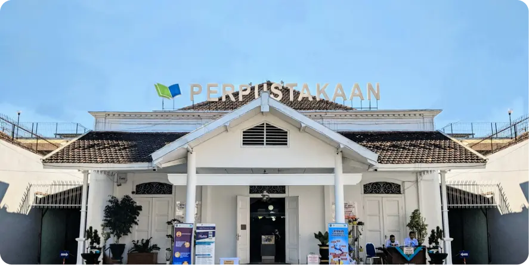
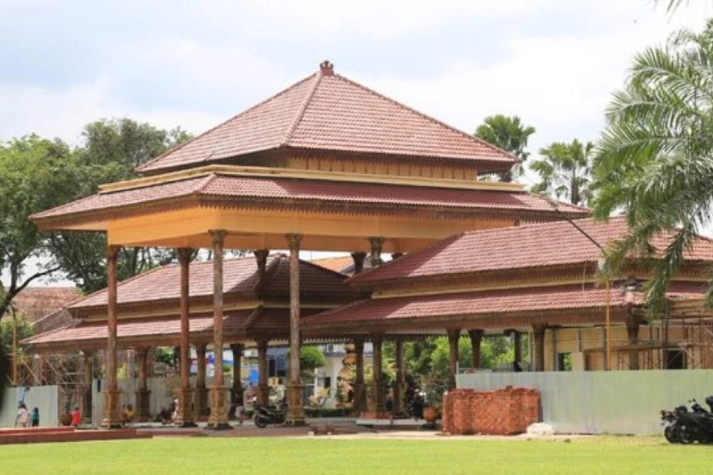
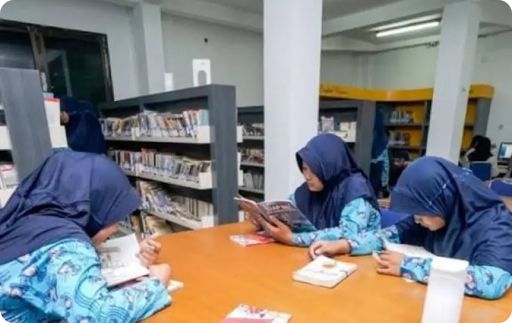

PERPUSTAKAAN KOTA MADIUN
Jelajahi Ribuan Buku,
Temukan Duniamu

Jl. Pahlawan No. 28, Madiun
Akses Cepat

Jadwal jam buka perpustakaan
● Buka sekarangSenin - Kamis
07.30 s/d 15.30
Jumat
07.30 s/d 11.00 & 13.00 s/d 14.00
Sabtu - Minggu
08.00 s/d 15.00
Reservasi online, atau baca e-book sekarang juga
60.000+
koleksi buku di rak
9.000+
koleksi e-book
500.000+
pengunjung setiap tahun
KATALOG TERPOPULER DAN PILIHAN
Buku Terpopuler Siap Pinjam Online Hari Ini


FASILITAS DAN LAYANAN
Ruang Literasi Ramah Semua Generasi

Alun-Alun Kota Madiun
Ruang terbuka hijau yang nyaman untuk membaca, bersantai, dan menikmati suasana kota.

Armada Mobil Pintar Keliling
Layanan perpustakaan keliling yang menjangkau berbagai sudut kota untuk masyarakat luas.

Pojok Ramah Anak
Ruang khusus anak untuk membaca dan belajar bersama dengan suasana yang menyenangkan.
KOLEKSI TERBARU